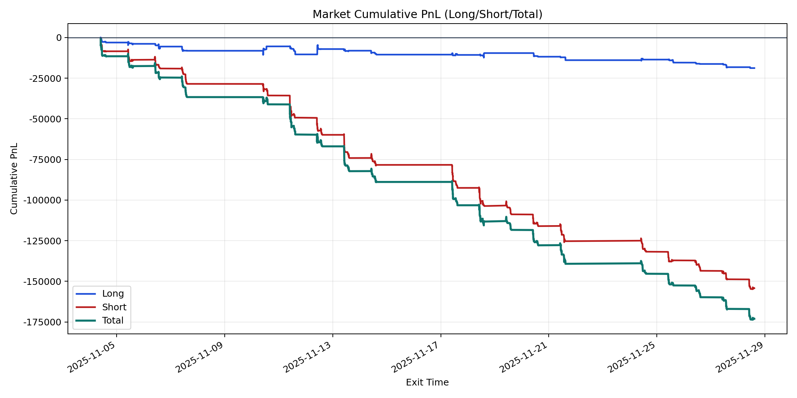
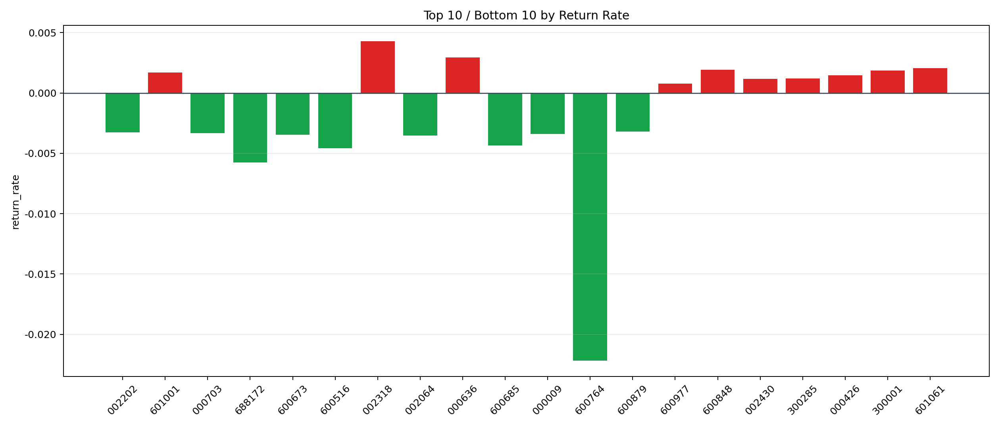

| repo_root | /home/haoranyou/data/output/dynamic_AUM_TAKER_index500 |
|---|---|
| period_months | 1 |
| period_label | 2025-11-04_to_2025-11-28 |
| start_time | 2025-11-04 09:50:07 |
| end_time | 2025-11-28 14:34:22 |
| n_trades | 6548 |
| n_symbols | 93 |
| total_pnl | -172976.29435000152 |
| long_total_pnl | -18788.127699999673 |
| short_total_pnl | -154188.16665000183 |
| total_entry_notional | 116457650.00000001 |
| long_entry_notional | 25366436.000000004 |
| short_entry_notional | 91091214.0 |
| total_return_rate | -0.0014853149994869508 |
| long_return_rate | -0.0007406687995112782 |
| short_return_rate | -0.0016926787983087132 |
| top_symbols_by_return | ["002318", "000636", "601061", "600848", "300001", "601001", "000426", "300285", "002430", "600977"] |
| bottom_symbols_by_return | ["600764", "688172", "600516", "600685", "002064", "600673", "000009", "000703", "002202", "600879"] |

